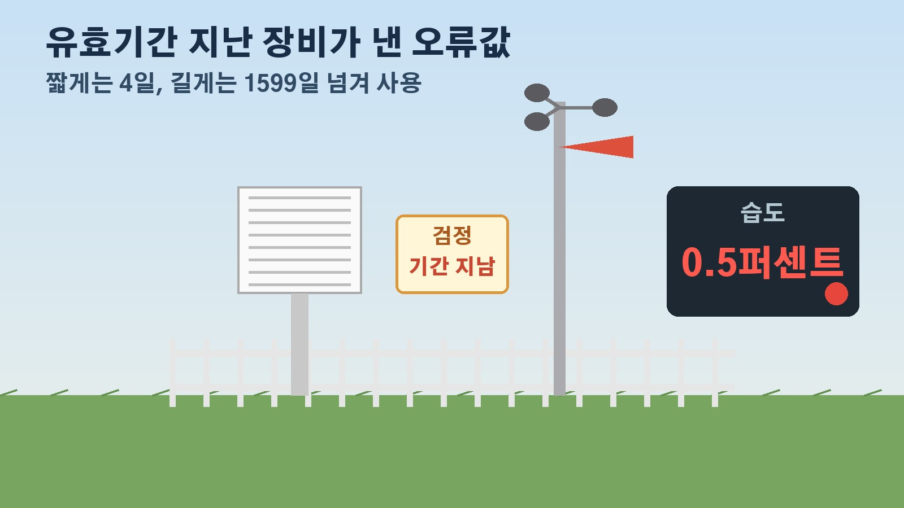

불합격 판정 받은 기상관측장비 177대가 그대로 돌았다, 감사원이 짚은 기상청 장비 관리 구멍

비가 온다더니 맑고, 맑다더니 갑자기 쏟아지는 날이면 예보를 어디까지 믿어야 할지 고민되실 때가 있죠. 그런데 날씨 예보의 출발점인 관측장비 관리에 구멍이 있었다는 감사 결과가 나왔습니다. 감사원이 10월 19일 공개한 기상청 정기감사 내용 가운데, 우리 생활과 맞닿은 관측장비 이야기를 중심으로 무엇이 문제였고 앞으로 무엇이 바뀌어야 하는지 정리해 볼게요.
감사원이 짚은 핵심, 전국 관측장비 3대 중 1대가 정보 누락
먼저 규모부터 볼게요. 지난해 10월 기준으로 중앙부처와 지방자치단체 등 전국 232개 관측기관이 기상관측장비 2만1533대를 운영하고 있어요. 온도계, 기압계, 습도계, 풍향계, 풍속계 등 10종인데, 이 가운데 75.8퍼센트인 1만6325대는 기상청이 아니라 다른 기관이 운영하는 장비입니다.
법에 따르면 관측기관은 형식승인과 검정을 받은 장비를 설치하고, 모델명과 제조번호, 검정일자 같은 주요 정보를 기상청의 관측메타데이터시스템에 등록해야 해요. 기상청은 이 정보를 바탕으로 기준에 못 미치거나 유효기간이 지난 장비를 찾아 사용중지나 재검정을 권고해야 하고요.
그런데 감사 결과 전체 장비의 34.4퍼센트인 7402대가 이 시스템에 주요 정보가 빠져 있었습니다. 다른 기관이 운영하는 장비만 따로 보면 1만6325대 중 7389대, 45.3퍼센트가 입력되지 않은 상태였어요. 장비 이력을 알 수 없으면 언제 검정을 다시 받아야 하는지도 확인하기 어렵다는 점에서 출발부터 관리가 흔들린 셈입니다.
검정에 떨어지고도 계속 쓰인 177대
더 눈에 띄는 건 검정에서 떨어진 장비들이에요. 최근 3년 동안 검정에 불합격한 유관기관 장비 305대 가운데 177대가 재검정 없이 비정상 상태로 계속 운영됐습니다. 습도나 온도, 일사량 등을 재는 과정에서 검정 기준을 넘는 편차가 나와 불합격 판정을 받은 장비들인데요, 기상청은 이를 그대로 두었다는 게 감사원 지적이에요.
이 177대 가운데 87대는 아예 관측메타데이터시스템에 주요 정보조차 등록돼 있지 않았습니다. 불합격 장비가 어디서 무엇을 재고 있는지 기록으로 따라가기도 어려웠다는 뜻이에요.
유효기간 지난 장비, 현장에서 확인된 오류 숫자들
검정 유효기간이 지난 장비도 문제였어요. 유관기관 장비 8936대를 살펴보니 343대가 유효기간이 지난 것으로 등록돼 있었고, 그중 94.8퍼센트인 325대가 재검정 없이 관측에 쓰이고 있었습니다. 그런데도 기상청은 사용중지나 재검정 같은 시정 권고를 하지 않았어요.
감사원이 이 325대 가운데 75대를 골라 현장 점검을 해 보니, 인천 부평구 등 13개 기관의 39대는 유효기간을 짧게는 4일, 길게는 1599일 넘긴 상태였습니다. 정읍시 등 5개 기관의 11대는 처음부터 검정 기준을 채우지 못했는데도 관측에 쓰이고 있었고요.

현장 측정 결과를 보면 문제가 더 실감 나요. 충북 제천시 봉양읍의 한 습도계는 유효기간을 1141일 넘긴 채 습도가 0.5퍼센트라는 값을 내보내고 있었는데, 이는 대기 습도로는 나올 수 없는 범위를 벗어난 오류값이에요. 전북 정읍시 덕천면의 습도계는 유효기간이 440일 지난 상태에서 실제 습도 73퍼센트를 48퍼센트로 재서, 허용 오차인 위아래 5퍼센트포인트의 5배에 이르는 25퍼센트포인트 차이를 보였습니다. 경기 안성시 보개면의 온도계는 1.3도의 오차를 냈고, 인천 부평구와 경기 고양시의 풍향계와 풍속계 등은 통신 불안이나 기능 불량으로 관측값이 아예 나오지 않고 있었어요.
예보 신뢰와 어떻게 연결될까, 감사원이 요구한 것
감사원은 관측장비 관리와 감독을 소홀히 해 부정확한 관측자료가 예보에 쓰이면서 기상예보의 신뢰성이 떨어질 우려가 있다고 밝혔어요. 관측장비의 성능과 정확성은 예보를 만드는 기초자료의 품질과 바로 이어지기 때문에, 관측값에 오차가 생기면 예보의 정확성에도 영향을 줄 수 있다는 거죠. 기상청이 직접 운영하지 않는 장비가 전체의 4분의 3이나 되는 만큼, 기관 사이를 묶는 관리 체계가 제대로 돌아가지 않았다는 점도 함께 지적됐습니다.
다만 감사원이 밝힌 것은 신뢰성이 떨어질 우려가 있다는 점이고, 이 장비들 때문에 특정 예보가 틀렸다는 것까지 확인한 것은 아니에요. 감사원은 기상청장에게 관측기관들이 빠진 정보를 시스템에 입력하게 하고, 유효기간이 지난 장비를 재검정하는 방안을 마련하라고 통보했습니다. 검정 기준에 못 미치는 장비가 계속 쓰이지 않도록 주의도 요구했어요.
함께 드러난 청사 공사비 8370만 원 이중 지급
이번 감사에서는 회계 실수도 적발됐어요. 수도권기상청은 2017년 12월 약 37억5천만 원 규모의 청사 신축공사 계약을 맺었고, 원도급업체의 재무 사정이 나빠지자 하도급업체에 공사대금을 직접 주기로 합의했습니다.
그런데 공사대금 지급 담당자는 원도급업체 계좌가 이미 압류된 사실을 알면서도 하도급업체 몫 8370만 원을 원도급업체 계좌로 보냈어요. 원도급업체가 하도급 내역을 붙이지 않고 대금을 청구했는데도 확인 없이 지급했고, 결재한 과장도 서류를 맞춰 보지 않았다고 합니다. 돈을 받지 못한 하도급업체가 소송을 냈고, 2022년 11월 대법원에서 최종 승소하면서 수도권기상청은 같은 해 12월 8370만 원을 다시 지급했어요. 원도급업체에 17차례 반환을 독촉했지만 재산이 이미 다른 채권자들에게 압류돼 돌려받지 못했습니다. 감사원은 담당자에게 5859만 원, 과장에게 2511만 원을 국가에 물어내라고 판정했어요.
정리하면 이번 감사에서 확인된 건 전국 관측장비의 3분의 1 정보 누락, 불합격 장비 177대 계속 운영, 유효기간 지난 장비 325대 재검정 없이 사용이라는 관리 공백이에요. 기상청이 감사원 통보에 따라 장비 정보 등록과 재검정을 언제까지 마무리하는지 지켜볼 만합니다.
참고한 기사 연합뉴스 감사원, 불합격 기상관측장비 활용으로 예보 신뢰 저하 우려 2026년 10월 19일, 뉴시스 감사원, 기상청 검정 불합격과 유효기간 지난 관측장비 방치 2026년 10월 19일, 매일경제 습도 0.5퍼센트 오류 장비 방치, 공사비 잘못 보내 손실 낸 기상청 2026년 10월 19일, 아시아경제 불합격 기상관측장비 177대 버젓이 가동, 기상청 부실관리 도마 2026년 10월 19일, 디지털타임스 감사원, 기상청 불합격 장비 운영 중 2026년 10월 19일
태그
기상청감사 감사원 기상관측장비 날씨예보 예보정확도 관측메타데이터시스템 검정불합격장비 습도계오류 수도권기상청 국고손실